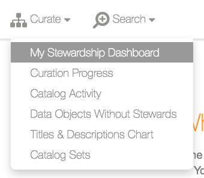
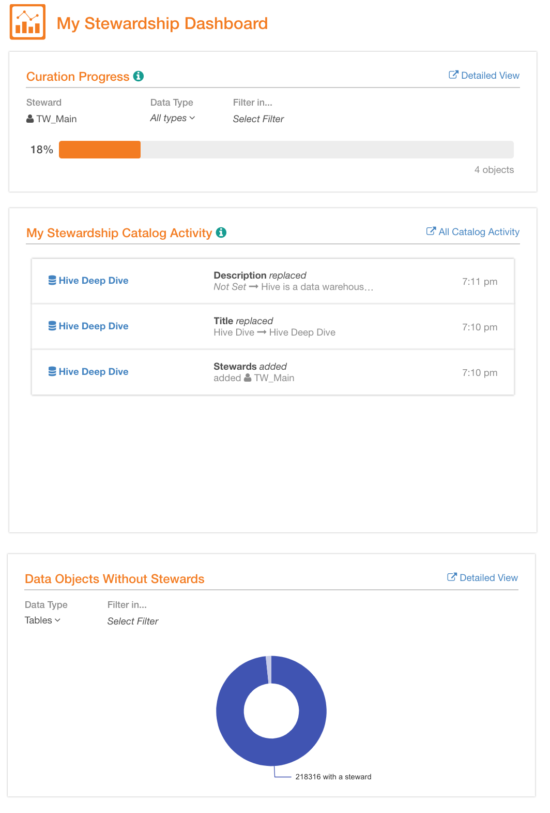

Stewardship Dashboard¶
Alation Cloud Service Applies to Alation Cloud Service instances of Alation
Customer Managed Applies to customer-managed instances of Alation
Available from release V R3 (5.6.x)
Enabling My Stewardship Dashboard¶
Note
Starting with release V R6 (5.10.2), My Stewardship Dashboard is always enabled. There is no longer a switch in Labs that would allow to enable it and no need to perform any enable actions.
This requires the role of a Server Admin.
To turn on the stewardship dashboard,
Click the Admin Settings icon on the upper right to go to the Admin Settings page.
Under the Server Admin section, click Labs then find and turn on the toggle for Enable Stewardship Dashboard.
Click Save changes on top right of the page then confirm by clicking Change Lab Features in the Verify Change Labs Features popup dialog.
After the feature is enabled, you will see that the Track menu on the main toolbar has changed to the Curate menu. In the background, an initial curation computation job will be triggered to compute the curation progress for all the data objects currently in the catalog. This background job will take time depending on the size of this data. On average, it can take between one to five hours to complete.
Note
Until the initial calculation background job is completed, My Stewardship Dashboard will have no data to display.
Accessing My Stewardship Dashboard¶
When My Stewardship Dashboard is enabled in your Alation instance and you are currently wearing the Data Steward/Governance Officer hat, you will see the Curate menu on the top toolbar. It lists the links to the dashboard and a separate view of each of the Stewardship reports.
My Stewardship Dashboard¶
The first option is My Stewardship Dashboard. When selected, it takes you to the dashboard page with the following summary views:
In versions before V R4 (5.8.x):
From V R4 (5.8.x) and above:
My Stewardship Dashboard V R4 (5.8.x):
{kind=link}
How is the Stewardship Dashboard Updated?¶
Initial Dashboard Calculation¶
After you turn on the flag in the Labs, an initial bulk calculation background job is run to compute the curation progress for all the data objects in your catalog. This will take some time depending on the size of data, usually, one to five hours depending on the amount of data. If you open My Stewardship Dashboard page from the Curate menu while the initial job is running, the reports will be empty. This initial bulk job only runs once. Later, My Stewardship Dashboard reports will be updated with incremental update background jobs.
Keeping the Reports Up-to-Date¶
All changes to curation progress are computed using incremental update jobs which are triggered by such events as:
Title and Description changes on Data Source, Schema, Table or Column types of Alation objects
Custom Field value changes, including adding/removing Stewards in the UI or using the API
New fields being added or existing fields being removed from the custom template of the Data Source, Schema, Table or Column
An MDE job runs and new objects are created or old objects are deleted
Deleting a Data Source
Restoring a deleted Data Source
Updates using Catalog Sets
Weekly Synchronization Job¶
As of release V R5 (5.9.x), we added a new sync job that runs every Saturday night and adds missing data objects, cleans up deleted data objects, and updates the curation progress of all the existing data objects.